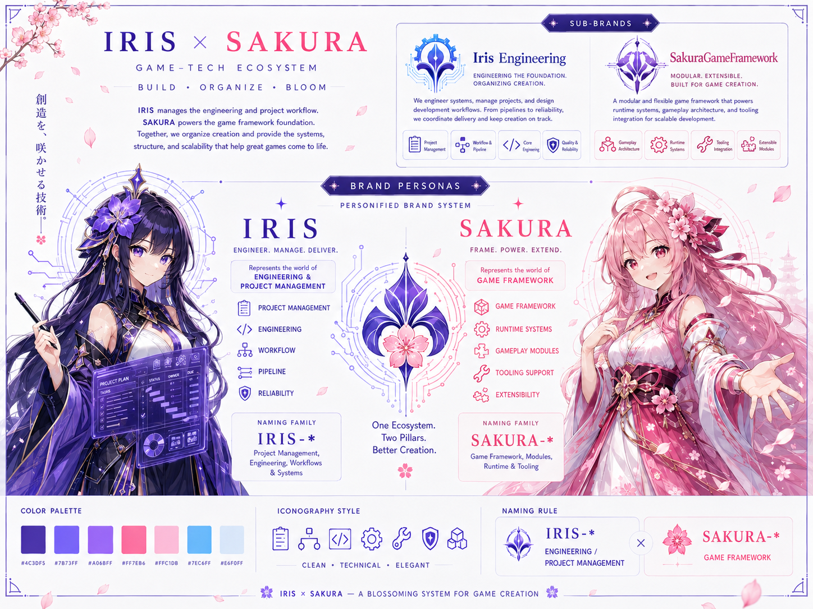
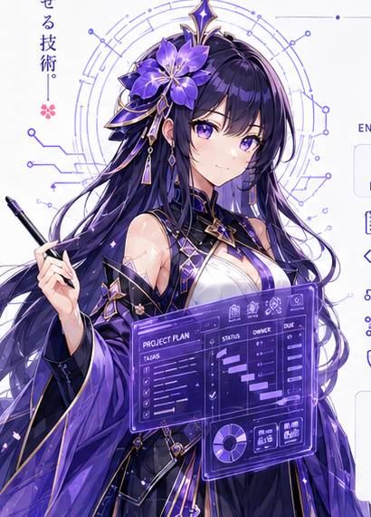
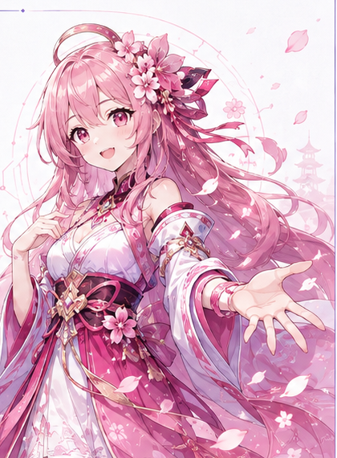

Tools & Engineering
冷静、精确、结构化。承担 Framework、Engineering、Developer Tools、Pipeline 与 Infrastructure。
- Scalable Systems
- Quality & Reliability
- Developer Velocity
IRIS × SAKURA · BRAND SYSTEM
一套连接工程体系与游戏体验的双人格视觉语言：IRIS 负责构建，SAKURA 负责绽放。
ONE ECOSYSTEM · TWO STRENGTHS
GAME-TECH ECOSYSTEM
不是把工程与创作混成一种声音，而是让两种力量在同一生态里各自清晰、彼此支撑。
MASTER BRAND BOARD
总览板保留双人格、工程子品牌、联合徽记、色板与命名家族的原始关系；网页组件则把这些规则变成可阅读、可复用的界面语言。

DUAL TRACKS
IRIS 对工程质量负责，SAKURA 对体验生命力负责。名称、语气和能力范围分别表达，生态层再用联合标识连接。
冷静、精确、结构化。承担 Framework、Engineering、Developer Tools、Pipeline 与 Infrastructure。
 ONE ECOSYSTEM
Shared intent
ONE ECOSYSTEM
Shared intent温暖、灵动、富有生命力。承担 Games、Experiences、Worldbuilding 与原创 IP。
ENGINEERING SUB-BRANDS
统一继承 IRIS 的工程语气与几何秩序，同时用职责和成果边界区分框架产品与研发工作流。
IRIS / FRAMEWORK
IRIS / ENGINEERING
VISUAL LANGUAGE
颜色负责区分力量，图标负责解释系统，命名负责守住产品边界。
#4C4CF5#7B73FF#A06BFF#FF7EB6#FFC1D8#7EC6FF圆角线框、清晰几何与适度细节，优先服务识别和信息层级。
IRIS-*Tools / Engineering / FrameworkSAKURA-*Games / Experiences / Worlds & IPPERSONIFIED BRAND
肖像只服务于品牌故事与文化表达；产品界面仍优先使用功能清晰的联合标识、产品名和系统图标。

